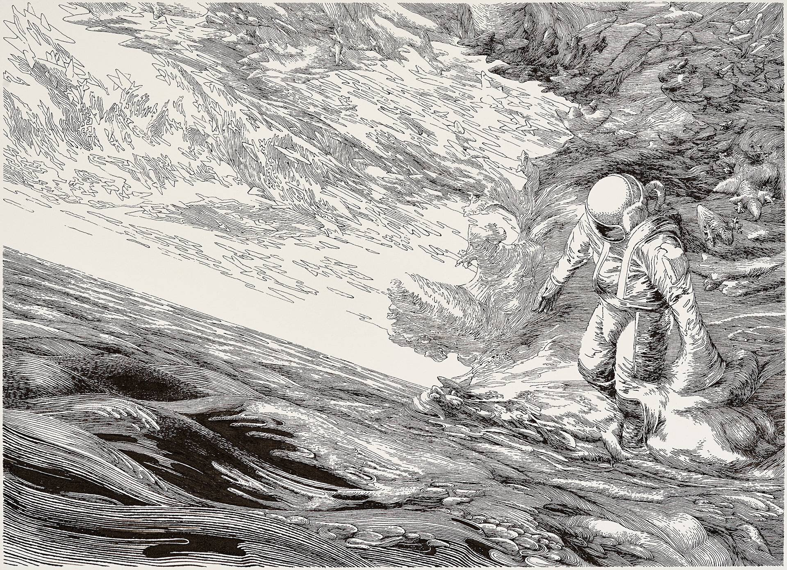
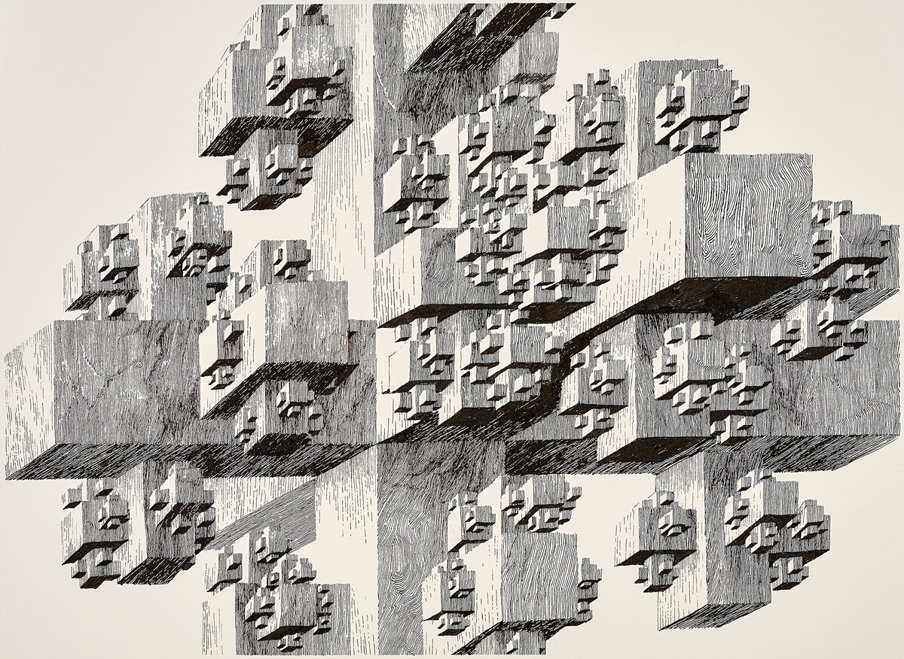

Связь внутреннего и внешнего
В произведениях Станислава Лема внутренний мир человека (память, страх, желания, совесть) постоянно сталкивается с внешним миром — космосом, иным разумом, технологиями. Эта связь — центральная философская тема его творчества.

художник - Tomasz Daniec
Внутренний мир
Лем исследует то, что скрыто внутри человека и часто оказывается сильнее внешних обстоятельств.
Ключевые понятия
- Память
- Материализация воспоминаний
- Хари в «Солярисе»
- Страх
- Стыд перед собой
- Невозможность забыть
- Совесть
- Этика контакта
- Ответственность учёного
Как это показано в романах
- Ранний Лем
- «Астронавты» — страх перед неизвестным
- «Магелланово облако» — мечта о будущем
- «Эдем» — шок от чужого разума
- Зрелый Лем
- «Солярис» — память как реальность
- «Голос Господа» — вера и разум
- «Фиаско» — цена контакта
Внешний мир
Космос у Лема не декорация, а активный участник — он сопротивляется пониманию и часто оказывается зеркалом для человека.
Формы внешнего мира
- Планеты
- Солярис — мыслящий океан
- Регис — рой микроботов
- Технологии
- Искусственный интеллект
- Симуляции реальности
- Иной разум
- Непознаваемость
- Отсутствие общего языка
Миниатюра → большое изображение

Нажмите на миниатюру — большое изображение откроется в новом окне
Точки соприкосновения
Внутреннее и внешнее у Лема не противопоставлены, а взаимно отражаются: встреча с космосом становится встречей с самим собой.
Вывод
Контакт с внешним миром у Лема всегда проваливается, если человек не готов к контакту с самим собой. В этом — главная мысль его философии: внешнее — это проекция внутреннего.